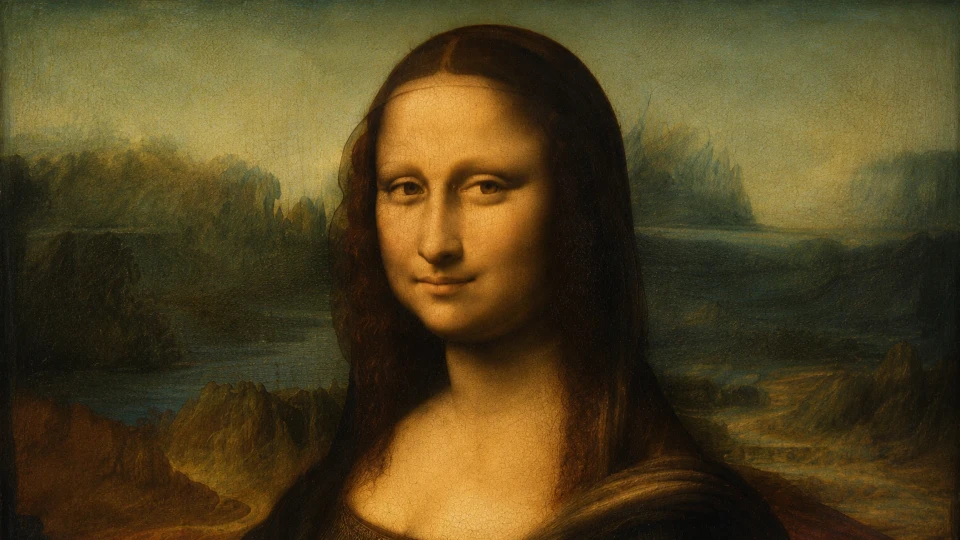

Louvre'un Salle des États salonuna girdiğinizde önce tabloyu değil, kalabalığı görürsünüz. Telefonlarını havaya kaldıran yüzlerce insan aynı yöne ilerler; güvenlik bariyerlerinin ötesinde, duvarın ortasında kurşun geçirmez ve iklim kontrollü camın arkasında ise çoğu ziyaretçinin hayal ettiğinden daha küçük bir portre durur. Yaklaşık 79 × 53 santimetrelik bu kavak panelin önünde insanlar bazen yalnızca birkaç saniyelik net bir görüş için bekler. Üstelik aynı müzede Veronese'nin devasa Kana'da Düğünü, antik heykeller ve Avrupa resminin sayısız başyapıtı vardır. Buna rağmen milyonlarca ziyaretçinin zihnindeki hedef değişmez: Leonardo da Vinci'nin Mona Lisa'sını görmek. Peki dünyada sayısız büyük sanat eseri varken neden özellikle bu küçük portre dünyanın en ünlü tablosu oldu?
Cevap, tek bir "sır"da saklı değil. Mona Lisa ne yalnızca gizemli gülüşü nedeniyle ünlüdür ne de 1911'de çalındığı için bir anda değersiz bir resimden başyapıta dönüşmüştür. Leonardo'nun portre sanatında yarattığı olağanüstü canlılık, sfumato tekniği, figür ile manzara arasındaki belirsiz ilişki ve modelin izleyiciyle kurduğu psikolojik temas eseri daha 20. yüzyıldan önce seçkin bir konuma taşımıştı. Ardından hırsızlık, gazetelerin yarattığı küresel merak, fotoğraf ve kartpostallarla çoğaltılma, Marcel Duchamp'tan Andy Warhol'a uzanan yeniden yorumlar, reklamlar ve popüler kültür geldi. Bugün Louvre'daki kalabalık aslında beş yüzyıldır üst üste biriken bu tarihsel sürecin son halkasıdır. Mona Lisa'nın ünü, resmin kendisi kadar onun başına gelenlerin de hikâyesidir.
Küçük Bir Portre Nasıl Dünyanın En Ünlü Tablosuna Dönüştü?
Leonardo da Vinci, portre üzerinde Floransa'da en azından 1503 civarında çalışmaya başladı ve Louvre'un güncel tarihlendirmesi eserin oluşum sürecini 1503–1519 aralığına yerleştiriyor. Resim tuval üzerine değil, kavak ağacından bir panel üzerine yağlı boya ile yapıldı. Boyutları yaklaşık 79 × 53 santimetredir; yani reprodüksiyonlarda ve ekranlarda kazandığı anıtsal görüntünün aksine, gerçek hayatta neredeyse yaşam boyutunda fakat oldukça kompakt bir portredir. Bugün Paris'te Louvre Müzesi'nin Denon Kanadı, 1. kattaki Salle des États salonunda sergilenir.
Bu temel bilgiler bile tablonun şöhretinin nasıl yanlış anlaşılabildiğini gösterir. Mona Lisa dünyanın en büyük, en eski veya en pahalıya satılmış resmi değildir. Leonardo'nun kariyerindeki tek yenilikçi eser de değildir. Onu benzersiz kılan, farklı şöhret katmanlarının aynı nesnede birleşmesidir. Resmin sanatsal itibarı önce Leonardo'nun çağdaşları ve sonraki sanatçılar arasında gelişti; Fransız kraliyet koleksiyonuna girmesi ve daha sonra Louvre'da halka açılması görünürlüğünü artırdı; 19. yüzyılda Leonardo'nun "evrensel deha" imgesi büyürken eleştirmenler portredeki kadının gülüşüne giderek daha fazla anlam yükledi. 1911 hırsızlığı ise bu zaten saygın eseri, resimli gazetelerin ve kitle iletişiminin çağında dünya çapında bir habere dönüştürdü.
Sanat tarihçisi Donald Sassoon'un Mona Lisa'nın şöhret tarihine ilişkin çalışmasının gösterdiği önemli nokta da budur: ün, tek bir anda ortaya çıkmadı. Eserin sanatsal niteliği, Paris'in 19. yüzyıldaki kültürel merkezi konumu, Louvre'un kamusal müze olarak gücü, Leonardo kültü, hırsızlık, avangard parodiler, uluslararası sergiler, reklam ve seri çoğaltma birbirini besledi. Dolayısıyla "Mona Lisa neden bu kadar ünlü?" sorusunun en doğru kısa cevabı, Leonardo'nun resimsel yenilikleri ile modern medya tarihinin olağanüstü biçimde aynı tabloda kesişmiş olmasıdır.
Mona Lisa Tablosundaki Kadın Kim?
Yüzyıllar boyunca Mona Lisa'daki kadının kimliği üzerine Isabella d'Este'den Giuliano de' Medici'nin çevresindeki kadınlara, hayalî bir ideal güzellik figüründen Leonardo'nun gizlenmiş otoportresine kadar çok sayıda teori üretildi. Fakat bugün sanat tarihindeki en güçlü ve genel kabul gören kimlik, Floransalı Lisa Gherardini del Giocondo'dur. Lisa 1479'da doğmuş, 1495'te Floransalı ipek tüccarı Francesco del Giocondo ile evlenmişti. İtalyanca La Gioconda adı kocasının soyadıyla, Fransızca La Joconde ise aynı geleneğin Fransızca biçimiyle ilişkilidir. "Mona" da modern anlamda bir ilk ad değildir; Monna, "Madonna"nın kısalmış biçimi olarak kabaca "hanımefendi" anlamına gelir.
Bu kimliğin uzun süre en önemli dayanaklarından biri Giorgio Vasari'ydi. Vasari, Sanatçıların Yaşamları adlı eserinin 1550 baskısında Leonardo'nun Francesco del Giocondo için eşi Mona Lisa'nın portresini yapmaya giriştiğini anlatır. Sorun, Vasari'nin metninin resmin başlangıcından yaklaşık yarım yüzyıl sonra yazılmış olmasıdır. Ayrıca Vasari'nin biyografileri paha biçilmez bilgiler içerirken anekdotlar, retorik süslemeler ve her zaman doğrudan gözleme dayanmayan ayrıntılar da barındırır. Bu yüzden onun tanıklığı önemlidir ama tek başına tartışmayı kapatan çağdaş bir belge gibi ele alınamaz.
Kimlik meselesini çok daha güçlü hâle getiren kanıt, Heidelberg Üniversitesi Kütüphanesi'nde korunan 1477 tarihli bir Cicero baskısının kenarına yazılmış nottur. Floransalı görevli Agostino Vespucci, Ekim 1503 tarihli bu notta Leonardo'yu antik ressam Apelles ile karşılaştırırken sanatçının Lisa del Giocondo'nun portresi üzerinde çalıştığını belirtir. Vespucci'nin kaydı, Leonardo'nun çalışmasıyla çağdaştır ve Vasari'nin onlarca yıl sonra verdiği isimle örtüşür. Louvre da güncel katalog kaydında portrenin Lisa Gherardini'yi temsil ettiğini kabul eder.
Bu, resim hakkındaki her ayrıntının çözüldüğü anlamına gelmez. Francesco'nun portreyi hangi olay vesilesiyle sipariş etmiş olabileceği, Leonardo'nun neden teslim etmediği ve ilk tasarım ile bugün Louvre'da gördüğümüz uzun süre geliştirilmiş yüzey arasındaki süreç hâlâ tartışılabilir. Fakat "Mona Lisa'nın kim olduğu tamamen bilinmiyor" demek artık kanıtların durumunu doğru yansıtmaz. Lisa del Giocondo kimliği, hem 16. yüzyıl geleneği hem de 1503 tarihli çağdaş belge tarafından desteklenen açık ara en güçlü açıklamadır.
Leonardo Mona Lisa'yı Neden Yanında Tuttu?
Bir tüccarın eşinin portresi olarak başlamış olması muhtemel bir resmin neden yıllar sonra hâlâ Leonardo'nun yanında bulunduğu, Mona Lisa tarihinin gerçekten ilginç sorularından biridir. Louvre'un araştırmaları Leonardo'nun eseri yaşamının sonuna kadar elinde tuttuğunu ve üzerinde uzun süre çalışmayı sürdürdüğünü belirtir. 1516'da Fransa Kralı I. François'nın daveti üzerine Fransa'ya yerleştiğinde yanında götürdüğü resimler arasında Mona Lisa da bulunuyordu. Leonardo 1519'da Fransa'da öldüğünde eser artık ilk Floransa siparişinin çok ötesine geçmişti.
Burada kesin bilgi ile makul yorum birbirinden ayrılmalıdır. Leonardo'nun neden resmi Francesco del Giocondo'ya teslim etmediğini açıklayan kendi yazılı beyanı elimizde değildir. "Tabloya âşık olduğu için vermedi", "gizli bir mesaj sakladığı için yanında tuttu" veya "aslında kendisini resmettiği için vazgeçemedi" gibi anlatılar kanıta dayanmaz. Daha ihtiyatlı açıklama, Leonardo'nun bazı eserlerini uzun süre yeniden ele alan çalışma alışkanlığı ve Mona Lisa'nın giderek onun resimsel araştırmalarının bir alanına dönüşmüş olmasıdır. Louvre, eseri Leonardo'nun yaşamının sonuna kadar sürdürdüğü ve ölümünde hâlâ tamamlanmamış sayılabilecek bir çalışma olarak değerlendirir.
Resmin Fransız kraliyet koleksiyonuna geçişinde de eski anlatılardaki bazı ayrıntılar dikkatle kullanılmalıdır. Louvre'un güncel araştırması, François I'in eseri büyük olasılıkla 1518'de edindiğini belirtir; 1999'da Bertrand Jestaz tarafından ortaya çıkarılan bir arşiv belgesi, kralın Leonardo'nun öğrencisi Salaì'ye "krala verdiği bazı resimler" için 2.604 livre ödediğini gösterir. Belge tabloları tek tek adlandırmadığı için işlem zincirinin her ayrıntısı tartışmasız değildir, ancak Mona Lisa'nın Leonardo'nun Fransa yıllarının ardından kraliyet koleksiyonuna girdiği kesindir. Fontainebleau ve Versailles gibi kraliyet mekânlarından geçen eser, Fransız Devrimi sonrasında Louvre koleksiyonunun parçası hâline geldi.
Bu hikâye Mona Lisa'nın şöhreti için önemlidir, çünkü resim yüzyıllarca özel bir Floransa evinde kalmadı. Avrupa'nın en güçlü monarşilerinden birinin koleksiyonuna girdi, ardından Paris'te halka açık bir ulusal müzenin başyapıtlarından biri oldu. Leonardo'nun resmi yanında tutması, farkında olmadan onun sonraki küresel yaşamının da yolunu değiştirmişti.
Leonardo'nun Portreyi Farklı Kılan Resimsel Kararları
Mona Lisa'yı yalnızca başına gelen olaylarla açıklamak, tablonun neden o olaylardan önce de sanatçılar ve uzmanlar için önemli olduğunu kaçırır. Lisa izleyiciye yaklaşık üç çeyrek dönüşle oturur; bedeni bir yöne, yüzü izleyiciye doğru yönelmiştir. Ellerinin biri diğerinin üzerine sakin biçimde yerleşir. Bu düzen bugün tanıdık gelebilir, çünkü sonraki portre geleneği üzerinde büyük etkisi oldu; fakat Leonardo figürü bir kimlik kaydı gibi sunmak yerine bedensel varlık, mekân ve psikolojik temas arasında son derece akıcı bir ilişki kurdu.
Kompozisyon kabaca piramidal bir denge taşır: baş üst noktayı oluştururken omuzlar, kollar ve eller aşağı doğru genişleyen kararlı bir yapı yaratır. Bu geometrik düzen resme durağanlık verirken yüz ve ellerdeki yumuşak geçişler figürü canlı tutar. Lisa ile izleyici arasında ağır mimari bariyerler veya gösterişli statü nesneleri yoktur. Koltuğun kolları ve parapet benzeri düzen mekânı tanımlar, fakat yüzün ve ellerin dikkati ele geçirmesine izin verir.
Arka plandaki manzara ise sıradan bir portre fonu değildir. Dolambaçlı yollar, su yolları, köprü, kayalık oluşumlar ve uzak dağlar insan figürünün ardında neredeyse jeolojik bir dünya kurar. Atmosferik perspektif sayesinde uzaklaştıkça renkler soğur, kontrast azalır ve ayrıntılar sis içinde çözülür. Böylece göz, Lisa'nın sıcak ve yakın teninden giderek daha belirsiz bir uzaklığa taşınır. Ufuk çizgilerinin iki yanda tam olarak aynı düzeyde algılanmaması da manzaraya hafif bir huzursuzluk verir; figür sakin görünürken arkasındaki dünya tek bir sabit bakış noktasına kolayca kapanmaz.
Leonardo'nun doğa gözlemleri burada portre sanatına karışır. İnsan bedeni ile yeryüzünün biçimleri arasında doğrudan bir "gizli şifre" aramak gereksizdir; daha önemli olan, sanatçının yüz, hava, su, kaya ve uzaklık gibi farklı olguları keskin sınırlar yerine süreklilikler üzerinden düşünmesidir. Mona Lisa'nın tuhaf canlılığı biraz da buradan gelir: model, dekoratif bir arka planın önüne yerleştirilmiş değildir; aynı atmosferin içinde nefes alıyor gibidir.
Mona Lisa'nın Gülüşünün Sırrı Nedir?
Mona Lisa denildiğinde çoğu insanın aklına önce gülüş gelir. Fakat bu gülüşün "sırrı" gizli bir mesajdan çok Leonardo'nun boya tekniği ile insan görme sisteminin etkileşiminde aranmalıdır. Leonardo'nun sfumato adıyla anılan yöntemi, biçimlerin kenarlarını sert çizgilerle kapatmak yerine çok ince ton ve renk geçişleriyle birbirine bağlar. İtalyanca fumo, "duman" sözcüğüyle ilişkilidir; sfumato da yüzün özellikle göz ve ağız çevresinde sanki ince bir atmosfer tabakasının içinden görülüyormuş gibi yumuşamasını sağlar.
Bu etki için Leonardo çok ince, yarı saydam boya katmanları ve geçişler kullandı. Ağız köşeleri keskin bir konturla "burada gülümseme başlıyor" diye işaretlenmez. Yanak, dudak ve gölge arasındaki sınırlar belirsizdir. Yüz ifadesini sabit bir işaret yerine değişken bir algıya dönüştüren şey de budur. Gülüşe doğrudan baktığınızda gördüğünüz ifade ile gözlere ya da resmin başka bir bölümüne bakarken çevresel görüşünüzün ağız bölgesinden topladığı bilgi aynı değildir.
Harvardlı nörobiyolog Margaret Livingstone bu olguyu görsel sistemdeki mekânsal frekanslarla açıklayan etkili bir yorum geliştirdi. Livingstone'a göre gülümsemeyi güçlendiren gölge ve ton ilişkilerinin önemli bölümü düşük mekânsal frekanslarda bulunur; çevresel görüş bu tür geniş, düşük ayrıntılı bilgiyi daha etkili algılarken merkezî görüş ince ayrıntılara duyarlıdır. Bu nedenle izleyici Mona Lisa'nın gözlerine veya başka bir bölgeye baktığında ağız çevresindeki gülüş daha belirgin hissedilebilir; doğrudan ağza odaklandığında ise ifade zayıflayabilir. Sonuç, sanki yüz siz bakarken değişiyormuş izlenimidir.
Bu bilimsel açıklama, gülüşün bütün sanat tarihsel anlamını tek başına çözmez. Bir yüz ifadesi kültürel beklentiler, portre geleneği ve izleyicinin psikolojisiyle de okunur. Üstelik "Mona Lisa neden gülümsüyor?" sorusuna, modelin çekim sırasında hangi duyguyu yaşadığını kesin biçimde söyleyen bir belge yoktur. Vasari, Leonardo'nun portre sırasında Lisa'yı neşeli tutmak için müzisyenler ve eğlendiriciler kullandığını anlatır; ancak bu renkli ayrıntı olaydan yaklaşık elli yıl sonra yazılmıştır. Dolayısıyla gülüşün görsel olarak neden değişken algılandığını açıklayabiliriz, fakat Lisa'nın o anda zihninden ne geçtiğini bildiğimizi söyleyemeyiz.
Tam da bu belirsizlik, resmin gücünü azaltmak yerine artırır. Yüz ne açıkça neşeli ne açıkça ciddi, ne davetkâr ne de bütünüyle mesafelidir. İzleyici kesin bir duyguyu yakalamaya çalıştıkça ifade yeniden kayar. Leonardo'nun teknik ustalığı, yüzyıllar sonra "gizemli gülüş" diye pazarlanacak şeyin görsel temelini oluşturmuştur.
Mona Lisa'nın Gözleri Gerçekten Bizi Takip Ediyor mu?
Bir başka popüler iddia, odada nereye giderseniz gidin Mona Lisa'nın gözlerinin sizi takip ettiğidir. Burada ilginç bir terminoloji karışıklığı vardır: psikolojide "Mona Lisa etkisi", bir portredeki kişinin doğrudan izleyiciye bakması durumunda, izleyici yana hareket etse bile bakışın kendisini takip ettiği izlenimini anlatmak için kullanılır. Bu etki yalnızca Leonardo'nun tablosuna özgü değildir; düz bir yüzeyde doğrudan izleyiciye yönelmiş birçok portrede ortaya çıkabilir.
Daha da ilginci, deneysel çalışmalar gerçek Mona Lisa'nın bakışının bu etkinin ideal örneği olmayabileceğini gösteriyor. Horstmann ve Loth'un ölçümleri, Mona Lisa'nın bakış yönünün izleyicinin bakış ekseninden yaklaşık 15,4 derece yana sapmış algılandığını bildirdi; bu değer doğrudan "bana bakıyor" hissiyle ilişkilendirilen tipik bakış konisinin dışındadır. 2022'de yayımlanan başka deneyler de algının izleme mesafesi ve görüntü boyutuyla değişebileceğini göstererek meselenin basit bir evet-hayır sorusundan daha karmaşık olduğunu ortaya koydu.
Dolayısıyla "gözleri sizi gerçekten takip ediyor" ifadesi bilimsel olarak fazla güçlüdür. Resim izleyiciyle etkileyici bir bakış ilişkisi kurar ve farklı konumlardan bakıldığında yüzün size dönüklüğü güçlü kalabilir; fakat bu, gözbebeklerinin optik bir hileyle fiziksel olarak yön değiştirdiği anlamına gelmez. Adını Mona Lisa'dan alan algısal olgu ile gerçek tablodaki ölçülen bakış yönünü birbirine karıştırmamak gerekir.
Mona Lisa 1911'den Önce de Ünlü müydü?
Mona Lisa hakkında en kalıcı internet efsanelerinden biri, 1911'de çalınana kadar kimsenin tabloyu önemsemediği ve hırsızlığın onu "başyapıt yaptığı" iddiasıdır. Hırsızlık şöhreti olağanüstü ölçüde büyüttü; fakat resmin daha önce önemsiz olduğu doğru değildir. Leonardo'nun sanatsal itibarı yüzyıllardır yüksekti. Mona Lisa Fransız kraliyet koleksiyonunda seçkin bir eserdi ve Louvre'a girdikten sonra sanatçılar tarafından kopyalanıp incelendi.
- yüzyılda tabloya yönelik hayranlık özellikle yoğunlaştı. Paris Avrupa sanat dünyasının merkezlerinden biriydi; Louvre geniş bir kamusal izleyiciye ulaşırken Leonardo'nun "dâhi" imgesi de büyüyordu. Théophile Gautier ve Walter Pater gibi yazarlar Mona Lisa'yı gizem, baştan çıkarıcılık ve zamansızlık diliyle yorumladı. Bu edebî inşa, bugün doğal sandığımız "esrarengiz kadın" imgesinin önemli bir bölümünü şekillendirdi. Donald Sassoon'un araştırması, tablonun 1911'den önce zaten son derece prestijli olduğunu, fakat henüz bugünkü ölçekte evrensel bir kitle ikonuna dönüşmediğini gösterir.
Bu ayrım önemlidir. 1911 hırsızlığı sanat tarihçilerinin değersiz gördüğü bir resmi keşfetmesini sağlamadı. Bunun yerine zaten yüksek kültür içinde ünlü bir eseri, modern kitle basınının herkese anlatabileceği bir suç hikâyesinin merkezine yerleştirdi. Bir başyapıt bir anda kayıp kişiye dönüştü; yüzü gazetelerde tekrar tekrar basıldı ve onu hiç görmemiş insanlar bile artık onu tanımaya başladı.
Mona Lisa'yı Kim Çaldı?
21 Ağustos 1911 Pazartesi günü Louvre halka kapalıydı. Ertesi gün ressam Louis Béroud, Mona Lisa'nın bulunduğu yere geldiğinde duvarda boşluk olduğunu fark etti. Başlangıçta resmin müze içinde fotoğraf çekimi gibi bir işlem için kaldırılmış olabileceği düşünüldü. Kısa süre sonra tablo gerçekten kayıptı. Müze kapatıldı, polis arama başlattı ve Paris basını bir sanat hırsızlığını ulusal krize çevirdi.
Hırsız, Louvre'da çalışmış İtalyan işçi Vincenzo Peruggia idi. Peruggia tablonun koruyucu düzenini ve müzenin işleyişini biliyordu. Olayın ayrıntıları farklı anlatımlarda zaman zaman dramatize edilmiş olsa da temel tablo açıktır: müze çalışanlarının giydiği beyaz iş önlüğünden yararlanarak eseri duvardan aldı, çerçeve ve koruyucu parçalarından ayırdı ve binadan çıkardı. Resim daha sonra Paris'teki odasında iki yıldan uzun süre saklandı.
Soruşturmanın büyüklüğü, dönemin Paris avangardını bile içine çekti. Şair Guillaume Apollinaire tutuklandı; çünkü çevresindeki Géry Pieret daha önce Louvre'dan küçük antik eserler çalmış ve bunların bazılarını Pablo Picasso'ya satmıştı. Picasso da sorgulandı. Fakat ne Apollinaire'in ne de Picasso'nun Mona Lisa hırsızlığını gerçekleştirdiğine dair kanıt bulundu. İkisi de bu suçtan aklandı. Bu bölüm, hırsızlık hikâyesinin ne kadar hızlı biçimde söylenti ve sansasyon üretebildiğinin erken bir örneğidir.
Peruggia 1913'te tabloyu İtalya'ya götürdü ve Floransa'da sanat tüccarı Alfredo Geri ile temasa geçerek eseri "İtalya'ya geri vermek" istediğini söyledi. Geri ve Uffizi yöneticisi Giovanni Poggi resmin gerçekliğini kontrol ettikten sonra yetkililere haber verdi; Peruggia yakalandı. Mona Lisa İtalya'da kısa süre sergilendikten sonra Fransa'ya döndü ve Ocak 1914'te Louvre'daki yerine kavuştu.
Peruggia daha sonra eylemini vatanseverlik gerekçesiyle savundu; Leonardo'nun eserinin Fransa tarafından İtalya'dan çalındığını düşündüğünü söyledi. Bu iddia tarihsel açıdan yanlıştı: Mona Lisa Napolyon'un İtalya seferlerinde yağmalanmış bir eser değildi. Leonardo resmi bizzat Fransa'ya götürmüş, ardından Fransız kraliyet koleksiyonuna geçmişti. Peruggia'nın milliyetçi açıklamasının onun tek motivasyonu olup olmadığı da tartışılmıştır. Kesin olan, hırsızın kimliği ve tablonun iki yıldan uzun süre onun elinde kaldığıdır.
1911 Hırsızlığı Mona Lisa'yı Nasıl Dünyaca Ünlü Yaptı?
Hırsızlığın etkisini anlamak için olayın gerçekleştiği medya çağını düşünmek gerekir. 20. yüzyılın başında fotoğraflı gazeteler, telgraf ajansları ve kitlesel basın bir haberi ulusal sınırların ötesine hızla taşıyabiliyordu. Louvre'daki boş duvar bile görülmesi gereken bir yere dönüştü. İnsanlar kayıp resmi değil, onun yokluğunu görmek için müzeye geldi. Gazeteler Mona Lisa'nın yüzünü tekrar tekrar bastıkça, hırsızlık istemeden tarihin en büyük tanıtım kampanyalarından birine dönüştü.
Bu süreçte suç hikâyesinin bütün klasik unsurları vardı: dünyanın önde gelen müzelerinden biri, ortadan kaybolan bir başyapıt, sonuçsuz polis aramaları, ünlü sanatçıların sorgulanması, milliyetçilik, gizemli bir fail ve iki yıl sonra gelen dramatik geri dönüş. Sanat tarihini takip etmeyen insanlar için bile haber anlaşılırdı. Bir Rönesans portresinin teknik özelliklerini bilmeye gerek yoktu; "Louvre'dan çalınan kadın"ın yüzünü tanımak yeterliydi.
Fakat hırsızlık tek başına kalıcı şöhreti açıklamaz. Haber döngüsü bittikten sonra Mona Lisa unutulabilirdi. Tam tersine, 20. yüzyılın çoğaltma teknolojileri onun yüzünü sürekli dolaşımda tuttu. Fotoğraf baskıları, kartpostallar, dergiler, okul kitapları, posterler, reklamlar ve hediyelik eşyalar eseri müze duvarından çıkarıp gündelik hayatın içine taşıdı. Bir görüntü ne kadar tanınır hâle geldiyse, onu taklit etmek ve parodileştirmek o kadar kolaylaştı; her yeni parodi de izleyicinin orijinali zaten bildiği varsayımını güçlendirdi.
Duchamp, Warhol ve Popüler Kültür Mona Lisa'yı Nasıl Yeniden Yarattı?
1919'da Marcel Duchamp, ucuz bir Mona Lisa reprodüksiyonuna bıyık ve sakal çizerek altına L.H.O.O.Q. harflerini ekledi. Başlık Fransızca yüksek sesle okunduğunda müstehcen bir kelime oyununa dönüşüyordu. Duchamp'ın müdahalesi yalnızca Leonardo'yla alay etmek değildi; sanat eserinin kutsallığı, özgünlük, reprodüksiyon ve kültürel otorite hakkında provokatif bir jestti. Fakat şakanın işlemesi için tek bir koşul vardı: izleyicinin bıyık eklenmeden önceki yüzü tanıması gerekiyordu. Mona Lisa artık parodisi açıklama gerektirmeyecek kadar güçlü bir simgeydi.
Andy Warhol 1963'te Thirty Are Better Than One gibi çalışmalarında Mona Lisa görüntüsünü seri biçimde çoğalttığında aynı ikon başka bir medya çağında yeniden doğdu. Warhol'un tekrarları, başyapıtın tek ve erişilmez nesne oluşuyla onun fotoğraf, baskı ve kitle kültüründe sonsuz sayıda çoğaltılabilmesi arasındaki gerilimi görünür kılıyordu. Leonardo'nun tek kavak paneli Louvre'da korunurken yüzü artık tüketim kültürünün çoğaltma mantığına aitti.
Sonraki on yıllarda reklamlar, karikatürler, albüm kapakları, televizyon, internet memeleri ve sayısız ticari ürün aynı yüzü yeniden kullandı. Bu aşamada Mona Lisa yalnızca "ünlü bir sanat eseri" olmaktan çıkarak sanat fikrinin kendisini temsil eden bir görsel kısaltmaya dönüştü. Bir reklama Mona Lisa yüzü koymak "Rönesans", "başyapıt", "gizem" veya "yüksek kültür" çağrışımını tek karede taşıyabiliyordu. Üstelik her kullanım, orijinal tablonun marka değerini yeniden üretiyordu.
Bu nedenle popüler kültürün Mona Lisa'yı "bozduğu" düşüncesi eksik kalır. Parodi ile prestij birbirini besledi. Tablo ne kadar kutsallaştırıldıysa onunla alay etmek o kadar etkili oldu; ne kadar çok parodileştirildiyse orijinal o kadar tanınır hâle geldi. Beş yüz yıllık bir resmin dijital çağda bile anında tanınmasının arkasında bu sürekli görsel dolaşım vardır.
Mona Lisa'nın Değeri Ne Kadar?
"Mona Lisa kaç para?" sorusuna internette yüz milyonlarca veya milyarlarca dolarlık rakamlarla cevap verilir, fakat bunların hiçbiri gerçek bir satış fiyatı değildir. Mona Lisa Louvre'daki Fransız kamu koleksiyonunun parçasıdır ve sanat piyasasında satışa sunulmuş bir eser değildir. Bu nedenle güncel piyasa değeri, açık artırmada el değiştiren bir tablo gibi ölçülemez.
Sıkça aktarılan 100 milyon dolar rakamının kaynağı 1962'deki sigorta değerlendirmesidir. Eserin 1962–1963'te Amerika Birleşik Devletleri'ndeki sergiler için taşınması öncesinde 100 milyon dolar değer biçildi; Guinness World Records bunu bir tablo için bilinen en yüksek sigorta değerlendirmesi olarak kaydeder. Ancak bu tutarı bugünün enflasyonuna göre çevirmek ve "Mona Lisa bugün şu kadar dolar eder" demek yanıltıcıdır. Sigorta değerlendirmesi, serbest piyasada gerçekleşmiş satış değildir. Dahası, o dönemde yüksek sigorta primleri yerine olağanüstü güvenlik önlemlerinin tercih edildiği belirtilir.
Mona Lisa'nın gerçek statüsü parasal bir fiyatın ötesindedir. Eserin tarihsel, kültürel ve kurumsal önemi onu pratik olarak yeri doldurulamaz kılar. Bu yüzden "dünyanın en pahalı tablosu" ifadesi de dikkatle kullanılmalıdır: açık artırma rekorlarıyla karşılaştırılabilecek bir satış verisi yoktur. Onun değeri hakkında kesin dolar rakamı veren listeler, kültürel değeri piyasa fiyatıyla karıştırır.
Mona Lisa Neden Kurşun Geçirmez Camın Arkasında?
Bugün tabloyu arada hiçbir engel olmadan görmek mümkün değildir. Bunun nedeni yalnızca hırsızlık korkusu değil, güvenlik ile koruma gereksiniminin birleşmesidir. Mona Lisa tuval değil, zaman içinde eğrilmiş ve çatlak geliştirmiş hassas bir kavak panel üzerine yapılmıştır. Louvre, 2005'ten beri eseri hem yüksek güvenlik sağlayan hem de sıcaklık ile nemi sıkı biçimde kontrol eden özel bir koruyucu vitrinde sergiliyor. 2019'daki yenilemede kullanılan cam, yansımayı azaltarak görüşü iyileştirecek şekilde de tasarlandı.
Bu önlemler tarihsel deneyimlerden bağımsız değildir. 1956'da bir saldırgan tabloya taş fırlattı; koruyucu cam kırıldı ve sol dirsek bölgesinde küçük bir hasar oluştu. Aynı yıl eser başka bir vandalizm olayına da maruz kaldı. Daha sonraki saldırılarda koruyucu sistem eserin zarar görmesini engelledi. 1974'te Tokyo'daki sergisi sırasında engelli ziyaretçilere yönelik erişim politikasını protesto eden bir kadın kırmızı boya püskürttü; boya koruyucu cama geldi. 2009'da bir ziyaretçi seramik bir kupa fırlattı ve kupa camda parçalandı.
Daha yakın dönemde tablo, görünürlüğünden yararlanmak isteyen protestoların hedefi olmayı sürdürdü. 2022'de bir kişi koruyucu cama pasta sürdü; 2024'te iki aktivist cama çorba fırlattı. Bu olaylarda tablo zarar görmedi. Buradaki ironik döngü açıktır: Mona Lisa çok ünlü olduğu için saldırı ve protestolar için güçlü bir medya hedefidir; her saldırı haberi de yüzünü yeniden dünya basınına taşıyarak ününü tazeler. Koruyucu cam bu yüzden yalnızca fiziksel bir bariyer değil, beş yüzyıllık bir sanat eserinin modern kitle kültürü içindeki sıra dışı konumunun da görünür işaretidir.
Mona Lisa Hakkındaki Efsaneler ve Gerçekler
Mona Lisa kadar ünlü bir görüntünün etrafında boşluk bırakmak zordur; bilinmeyen her ayrıntı zamanla bir teoriyle doldurulur. Bunlardan biri kaşlarının neden olmadığıdır. Günümüzde portrede belirgin kaş ve kirpik görülmez. Vasari ise betimlemesinde kaşlardan söz eder. Bunun açıklaması olarak dönemin güzellik uygulamaları, pigmentlerin zamanla kaybolması, temizlik ve eski restorasyon müdahaleleri gibi farklı olasılıklar ileri sürülmüştür. Pascal Cotte'un multispektral incelemeleri kaş ve kirpiklere ilişkin izler bulunduğu iddiasıyla gündeme gelmiştir; ancak "Leonardo kesinlikle kaş çizdi ve bunlar şu tarihte silindi" biçiminde eksiksiz bir tarihsel zincir kanıtlanmış değildir. Louvre'un da belirttiği gibi tablo Leonardo'nun ölümünden sonra eklenen, zamanla oksitlenmiş vernik katmanları ve geçmiş müdahaleler nedeniyle bugün orijinal renk ilişkilerini bütünüyle göstermemektedir.
Bir başka popüler iddia, gözlerde veya manzarada gizli harfler ve şifreler bulunduğudur. Yüksek çözünürlüklü görüntülerde çok küçük izleri harflere benzetmek mümkündür; fakat bunları Leonardo'nun bilinçli biçimde yerleştirdiği gizli mesajlar olarak doğrulayan kabul görmüş bir sanat tarihsel kanıt yoktur. Leonardo'nun not defterlerinde ayna yazısı kullanması ve bilimsel merakı, modern komplo kültürünün onun eserlerinde sürekli kod aramasını kolaylaştırmıştır. Fakat sanatçının karmaşıklığı, her belirsiz lekenin şifre olduğu anlamına gelmez.
Mona Lisa hamile miydi? Lisa Gherardini'nin yaşamındaki doğumlar ve portredeki giysinin yorumlanması bu teoriyi beslemiştir. Bazı araştırmacılar ince tül örtü ve kıyafet ayrıntılarını annelik ya da hamilelikle ilişkilendirmiştir; fakat tablonun kendisi tıbbi bir belge değildir ve hamilelik kesin biçimde kanıtlanamaz. Benzer biçimde, resmin bir doğum veya yeni ev vesilesiyle sipariş edilmiş olabileceğine ilişkin öneriler tarihsel bağlam açısından mümkündür ama doğrudan sipariş belgesi bulunmadığı için olasılık düzeyinde kalır.
Mona Lisa Leonardo'nun kendi portresi mi? Yüz oranlarının Leonardo'ya atfedilen yaşlı erkek portreleriyle karşılaştırılması ve dijital üst üste bindirmeler bu iddiayı popülerleştirdi. Fakat Vespucci'nin 1503 tarihli çağdaş notu Leonardo'nun Lisa del Giocondo'nun portresi üzerinde çalıştığını açıkça belirttiği için otoportre teorisi ana kimlik açıklaması olarak çok zayıftır. Sanatçının kendi yüz özelliklerini bilinçli veya bilinçsiz biçimde modele aktarıp aktarmadığı gibi spekülasyonlar test edilmesi zor fikirlerdir; bunlar Lisa kimliğini çürüten kanıt sayılmaz.
Peki "ikinci Mona Lisa" var mı? Leonardo atölyesi ve takipçileri çevresinde Mona Lisa kompozisyonunun çeşitli kopyaları ve varyantları üretildi. Madrid'de Prado Müzesi'ndeki versiyon özellikle önemlidir; restorasyon ve teknik incelemeler, bunun Leonardo'nun atölyesinde Louvre tablosuyla aynı süreçte çalışan bir sanatçı tarafından yapılmış olabileceğini düşündürmüştür. Ayrıca "Isleworth Mona Lisa" olarak bilinen tablo zaman zaman Leonardo'nun daha erken versiyonu diye sunulur, ancak bu atıf genel bilimsel uzlaşı değildir. Bir kopyanın veya varyantın varlığı, Louvre'daki eserin "sahte" olduğu anlamına gelmez; Rönesans atölyelerinde kompozisyonların çoğaltılması olağandışı değildi.
Bu teorilerin kalıcılığı tesadüf değildir. Mona Lisa'nın yüzündeki belirsizlik, resmin uzun yapım süreci ve Leonardo'nun olağanüstü şöhreti, her kuşağa yeni bir "çözülmemiş sır" üretme alanı açar. Fakat gerçek sanat tarihi, gizemi tamamen yok etmek zorunda değildir. Kanıtlanmış olanı olası olandan ayırmak, eseri daha az ilginç değil, tam tersine daha anlaşılır kılar.
Mona Lisa'nın Şöhreti Neden Hâlâ Devam Ediyor?
Bugün Mona Lisa'yı ilk kez görmek neredeyse imkânsızdır. Louvre'a gitmeden önce yüzünü reklamda, ders kitabında, sosyal medyada, filmde, kupada veya parodide görmüş oluruz. Bu durum gerçek tabloyla karşılaşmayı garip bir deneyime dönüştürür: insan yalnızca bir Rönesans portresine değil, daha önce binlerce kez çoğaltılmış bir kültürel simgenin fiziksel orijinaline bakar. Önündeki kalabalık da eserin şöhretinin sonucu olduğu kadar onun yeni ziyaretçiler üzerindeki etkisinin bir parçasıdır.
Mona Lisa neden bu kadar ünlü sorusunun nihai cevabı bu yüzden "çünkü en güzel tablo" veya "çünkü gülüşünün sırrı çözülemedi" kadar basit değildir. Leonardo'nun figürü canlı kılan sfumato tekniği, kompozisyonun yeniliği ve psikolojik belirsizlik esere olağanüstü bir sanatsal temel verdi. Lisa Gherardini'nin kimliği etrafındaki tartışmalar ve Leonardo'nun resmi yıllarca yanında tutması merakı artırdı. Fransız kraliyet koleksiyonu ve Louvre ona kurumsal prestij kazandırdı. 19. yüzyıl yazarları gülüşü bir kültürel mite dönüştürdü. 1911 hırsızlığı yüzünü küresel basına taşıdı. Fotoğraf ve kitlesel baskı onu çoğalttı; Duchamp ve Warhol gibi sanatçılar yeniden yorumladı; reklam ve popüler kültür ise görüntüyü kuşaktan kuşağa aktardı.
Bu süreçte asıl olağanüstü olan, resmin bütün bu gürültünün altında hâlâ görsel olarak direnebilmesidir. Kalabalığı, kameraları ve hakkında duyduğumuz yüzlerce hikâyeyi bir anlığına unutabilirsek karşımızda hâlâ küçük bir kavak panel, yumuşak ışıkla biçimlenen bir yüz, birbirine değen eller ve uzak bir manzara vardır. Şöhretinin tarihi modern dünyanın medya tarihine kadar uzanır; fakat bu şöhretin üzerine kurulabildiği sağlam zemin Leonardo'nun resmidir. Mona Lisa, sanat, belirsizlik, suç, medya, çoğaltma ve popüler kültürün aynı nesnede birbirini beslediği benzersiz bir tarihsel süreç sayesinde dünyanın en ünlü tablosuna dönüştü.
Mona Lisa Hakkında Sıkça Sorulan Sorular
Mona Lisa'yı kim yaptı?
Mona Lisa, İtalyan Rönesans sanatçısı Leonardo da Vinci tarafından yapıldı. Leonardo portre üzerinde Floransa'da en azından 1503 civarında çalışmaya başladı ve eseri yaşamının son yıllarında Fransa'ya götürerek üzerinde çalışmayı sürdürdü.
Mona Lisa tablosundaki kadın kimdir?
Genel kabul gören ve güçlü belgelerle desteklenen görüşe göre kadın, Floransalı Lisa Gherardini del Giocondo'dur. Giorgio Vasari'nin 1550'deki anlatısını, Agostino Vespucci'nin Ekim 1503 tarihli çağdaş kenar notu önemli ölçüde doğrular.
Mona Lisa ne zaman yapıldı?
Leonardo'nun Lisa del Giocondo portresi üzerinde 1503'te çalıştığını gösteren çağdaş belge vardır. Louvre eseri yaklaşık 1503–1519 arasına tarihlendirir; Leonardo'nun tabloyu uzun yıllar geliştirdiği ve ölümüne kadar yanında tuttuğu kabul edilir.
Mona Lisa neden bu kadar ünlüdür?
Ünü tek bir nedenden kaynaklanmaz. Leonardo'nun yenilikçi portre tekniği ve sfumato kullanımı, gizemli algılanan ifade, Louvre'daki prestiji, 1911 hırsızlığı, dünya basını, kitlesel reprodüksiyonlar ve modern popüler kültür birlikte Mona Lisa'yı küresel bir ikona dönüştürdü.
Mona Lisa neden gülümsüyor?
Lisa Gherardini'nin neden o ifadeyle resmedildiğini kesin olarak bilmiyoruz. Gülüşün değişiyormuş gibi algılanmasında ise Leonardo'nun ağız çevresindeki yumuşak sfumato geçişleri ile merkezî ve çevresel görmenin farklı çalışmasının rol oynadığına ilişkin güçlü görsel-bilimsel açıklamalar vardır.
Mona Lisa'yı kim çaldı?
Tabloyu 21 Ağustos 1911'de Louvre'da çalışmış İtalyan Vincenzo Peruggia çaldı. Eseri iki yıldan uzun süre sakladı; 1913'te Floransa'da ortaya çıkarmaya çalışınca yakalandı ve tablo Fransa'ya geri döndü.
Mona Lisa nerede sergileniyor?
Mona Lisa, Paris'te Louvre Müzesi'nin Denon Kanadı'ndaki Salle des États, Salon 711'de sergileniyor. Eser güvenlik ve koruma amacıyla iklim kontrollü, yüksek güvenlikli özel cam vitrinin arkasındadır.
Mona Lisa'nın değeri ne kadar?
Mona Lisa satılık olmadığı için güncel bir piyasa fiyatı yoktur. 1962'de ABD sergisi öncesinde 100 milyon dolarlık sigorta değerlendirmesi yapılmıştı; bu tarihsel rakam gerçek bir satış fiyatı veya tablonun bugünkü piyasa değeri değildir.
Mona Lisa'nın kaşları neden yok?
Bugün tabloda belirgin kaşlar görünmez, ancak bunun tek ve kesin olarak kanıtlanmış bir nedeni yoktur. Zaman içindeki yüzey değişimleri ve eski müdahaleler gibi açıklamalar ileri sürülmüş; teknik incelemeler kaş ve kirpik izleri olabileceğini öne sürmüştür. Bu nedenle "Leonardo hiç kaş çizmedi" demek de kesin değildir.
Mona Lisa'nın gözleri gerçekten insanı takip ediyor mu?
Birçok portrede izleyici hareket ettiğinde bakışın kendisini takip ettiği hissi oluşabilir ve bu olgu "Mona Lisa etkisi" diye bilinir. Ancak deneysel ölçümler gerçek Mona Lisa'nın bakışının doğrudan izleyiciye değil yaklaşık 15 derece yana yönelmiş algılanabildiğini göstermiştir; dolayısıyla tablo bu etkinin kusursuz örneği değildir.
Kaynakça
Musée du Louvre, Portrait de Lisa Gherardini, épouse de Francesco del Giocondo, dit La Joconde ou Monna Lisa, Collections du Louvre. https://collections.louvre.fr/ark:/53355/cl010062370
Musée du Louvre, From the Mona Lisa to The Wedding Feast at Cana --- The Salle des États. https://musee.louvre.fr/en/explore/the-palace/from-the-mona-lisa-to-the-wedding-feast-at-cana
Musée du Louvre, La Joconde, exposition immersive. https://www.louvre.fr/decouvrir/vie-du-musee/la-joconde-exposition-immersive
Universität Heidelberg, Mona Lisa's Identity Established Beyond Doubt, 14 Ocak 2008. https://www.uni-heidelberg.de/press/news/press552e.html
Sassoon, Donald. "Mona Lisa: the Best Known Girl in the Whole Wide World." History Workshop Journal, 51/1 (2001), s. 1–18. https://doi.org/10.1093/hwj/2001.51.1
Sassoon, Donald. Mona Lisa: The History of the World's Most Famous Painting. HarperCollins, 2001/2002.
Zöllner, Frank. Leonardo da Vinci, 1452–1519: The Complete Paintings and Drawings. TASCHEN.
Kemp, Martin. Leonardo da Vinci: The Marvellous Works of Nature and Man. Oxford University Press.
Livingstone, Margaret. Vision and Art: The Biology of Seeing. Abrams; ayrıca Harvard Medical School Livingstone Lab, "Vision and Art". https://livingstone.hms.harvard.edu/vision-and-art
Actis-Grosso, Rossana ve diğerleri. "Looking Into Mona Lisa's Smiling Eyes: Allusion to an Illusion." Frontiers in Human Neuroscience 16 (2022): 878288. https://doi.org/10.3389/fnhum.2022.878288
Cotte, Pascal; Simonot, Lionel. "Mona Lisa's spolvero revealed." Journal of Cultural Heritage 45 (2020), s. 1–9. https://doi.org/10.1016/j.culher.2020.08.004
Vasari, Giorgio. Le Vite de' più eccellenti pittori, scultori e architettori (ilk baskı 1550; genişletilmiş baskı 1568), Leonardo da Vinci biyografisi.
Philadelphia Museum of Art, Marcel Duchamp --- L.H.O.O.Q. (1919). https://www.philamuseum.org/exhibitions/marcel-duchamp
Guinness World Records, Highest insurance valuation for a painting. https://www.guinnessworldrecords.com/world-records/highest-insurance-valuation-for-a-painting